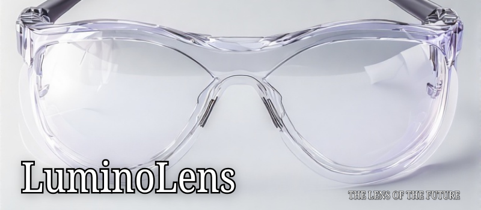
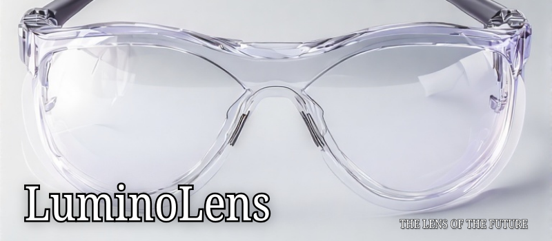

Home
About Us
Home
About Us

 

Long hours on screens should not cost your vision. LuminoLens glasses filter harmful blue light emitted by laptops, phones, and tablets. Say goodbye to tired eyes, blurry vision, and constant headaches — and say hello to comfortable, focused screen time.
Unlike generic blue light glasses, LuminoLens lenses are spectrometer-tested and come with transparent certification. You’re not just buying eyewear — you’re choosing verified, visible safety for your eyes.
Whether you're coding, designing, binge-watching lectures, or gaming all night, LuminoLens is made to keep up. Lightweight frames, comfortable design, and budget-friendly pricing — finally, glasses that get your lifestyle.
Every pair links to a digital microsite with daily eye care exercises, posture tips, and scientifically curated guides to help you maintain healthy screen habits. LuminoLens supports your eyes — and your routine.